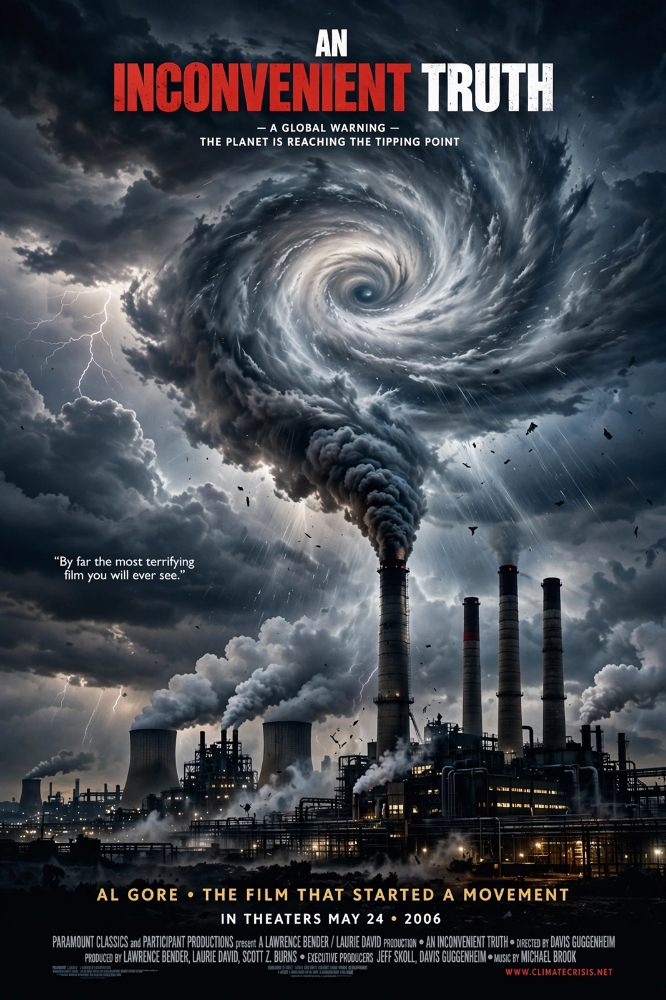

An Inconvenient Truth

An Inconvenient Truth is a 2006 American documentary film directed by Davis Guggenheim, built around former US vice-president Al Gore's travelling slideshow on Global warming. It brought climate science to a mass audience and won the Academy Award for Best Documentary Feature.
The film's mixture of science presentation, personal memoir and moral appeal made it a cultural event — and a partisan lightning rod — far beyond the usual reach of documentaries.
Content and reception
Gore presents the evidence for warming — the {L('Keeling_Curve')}, retreating glaciers shown in before-and-after photographs, ice-core records — then the projected consequences (sea-level rise flooding coastal cities, stronger storms, shifting disease) and the argument that the crisis is moral, not merely technical. The film grossed roughly US$49 million worldwide on a small budget, unusually high for a documentary, and was accompanied by a bestselling book of the same name.
In 2007 a British court, ruling on the film's distribution to schools, found it 'broadly accurate' but identified nine points where it departed from mainstream scientific positions (for example on the timing of sea-level rise), requiring guidance notes for teachers — a nuanced verdict both sides claimed as victory.
Impact
Together with the IPCC's Fourth Assessment Report the following year, and the Nobel Peace Prize shared by Gore and the IPCC in 2007, the film marks the high-water line of pre-2010 public climate concern in the United States. Its slideshow format was widely imitated, including by Gore's own Climate Reality Project trainees.
See also: Al Gore · Global warming · Climate change · IPCC · Keeling Curve